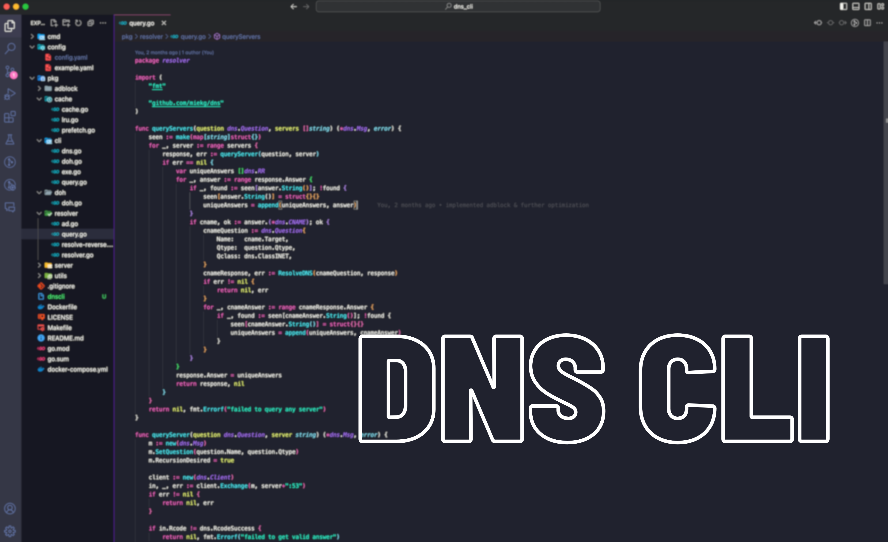

DNS Server and CLI
This project has a DNS server and a command-line interface (CLI) tool for querying DNS records. Which both works independentally as well.The server, implemented using a DNS library, supports both standard DNS and DNS over HTTPS (DoH). It includes features such as caching, ad-blocking, and reverse DNS resolution.
The CLI tool built using Cobra CLI allows users to perform DNS queries and reverse lookups with various options. Key features include querying DNS servers for different record types, using DoH for queries, and enabling verbose output.
Github
WHY THIS?
The Domain Name System (DNS) is often referred to as the "phonebook of the internet." It translates human-readable domain names, like `google.com`, into IP addresses that computers use to identify each other on the network. Every time you visit a website, send an email, or use an online service, DNS is working behind the scenes to direct your request to the correct server.This project holds significant value as it empowers you to run your own DNS server, providing greater control over your internet traffic. It also offers an ad-blocking feature by blocking query for known ad domains reducing risk of malicious sites. Additionally, caching DNS responses on your server reduces latency and load on upstream servers, leading to faster resolution of frequently accessed domains.
In terms of privacy, running your own DNS server ensures that your DNS queries are not being logged or monitored by external DNS providers. The DNS over HTTPS (DoH) feature further enhances privacy by encrypting your DNS queries, protecting them from being intercepted or tampered with by third parties.